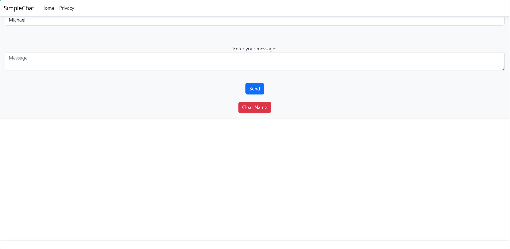

Websites
Here is one of my websites that I am most proud of and love because of it's source; the setting for a DnD campaign that I loved along with the people I did it with, and wanted to commemorate: Doge's Academy for Superheroes (DAS)
Here is my website of DAS again, but this time a bit improved in my opinion and using Bootstrap instead of jQuery: Refactored DAS
Here is one of the first websites I made. It isn't my best by far, but I still remember it and when I made it thinking: "This is my first website." (The title is misleading, it's impossible because of difficulty, not theme.): MissionImpossible
Here's a game I made for Game Development that I thought turned out well. It's just a little coin grabber time limit game, but I liked how it turned out, so I'm including it.
I can't give a link to it to play, but here is a video of it, on a separate page.
Finally, here's a picture of a website I made, but with MCV Core this time instead of using HTML, CSS, and Javascript.
(Please forgive the blur, it came with the picture, I'm not sure why. I'll see if I can fix it eventually.)

Skills/Classes
Languages
- HTML
- CSS
- Javascript
- Typescript
- C#
- Python
- SQL
- C++(minor)
- Java(minor)
Software Classes
- SWDV-105: Intro to Programming
- SWDV-110: Intermediate Programming
- SWDV-115: Web Application Development
- SWDV-140: Intermediate Web App Dev.
- SWDV-143: Client Side Frameworks
- SWDV-152: Systems Analysis and Design
- SWDV-271: Game Development
- SWDV-210: Intro Server-Side Programming
- SWDV-220: Fund of Database Systems
- SWDV-235: Advanced Web App Development
- SWDV-290: Capstone Internship
Other Classes
- ENGL-101: Writing and Rhetoric I
- PYCH-140: Human Relations for Success
- COMM-101: Fund of Oral Communication